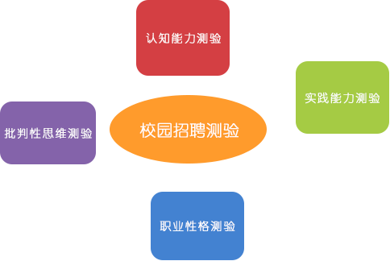
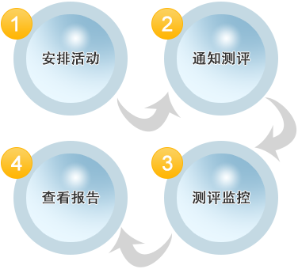

多方位精准识别优秀毕业生
- 认知能力测验：按需分配，全面考察，组合优化，题型丰富，大数据支持；
- 实践能力测验：考察应聘者工作过程中解决实际问题的能力；预测应聘者的实际工作绩效；
- 职业性格测验：多维度考察应聘者性格特点；了解应聘者与岗位、组织文化的匹配度；
- 批判性思维测验：考察应聘者分析判断所需的批判性思维技能；帮助企业发掘思维开放、灵活、有洞察力的人才。

校园招聘测评流程
- 测评安排：根据不同岗位安排相应校招测评；
- 测评通知：将需要进行测评的人员安排到活动中，系统自动发送通知；
- 测评监控：应聘者答题过程中，可通系统实时监控应聘者答题情况；
- 查看报告：测评结束后，通过精密算法及数据分析得到的职位匹配度， 将直接预测应聘者和用人标准吻合程度，系统自动生成测评报告。

校园招聘的价值
- 节约成本：有目标的选择,节约大量面试时间成本与人力成本;
- 提高招聘效率：海量应聘者可以在线同步测评，高效完成大量应聘者的测评；
- 降低流失率：从能力和性格角度辅助企业为录用者定岗，避免不适应。